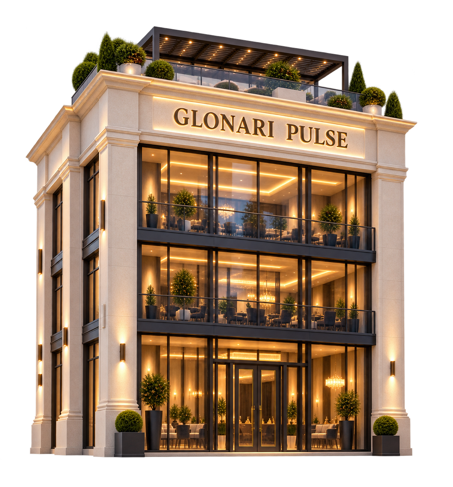
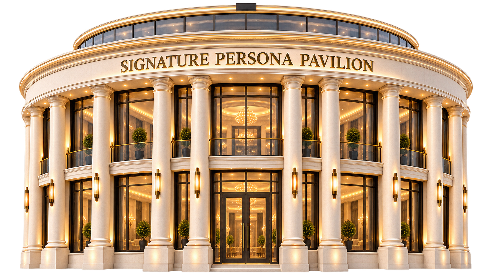
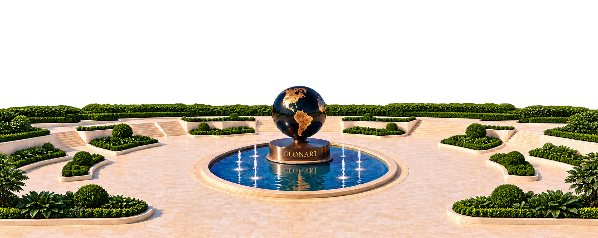

Glonari brings real estate, member participation, artificial intelligence, global connections, and financial intelligence together to help lower your cost of living and make ownership more achievable. Gia quietly connects it all.


